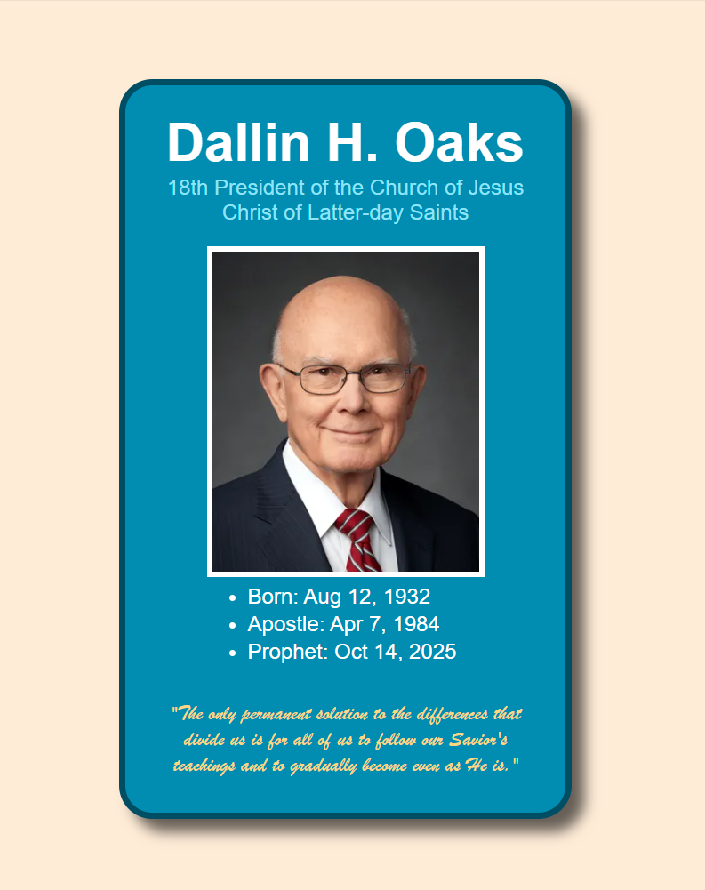
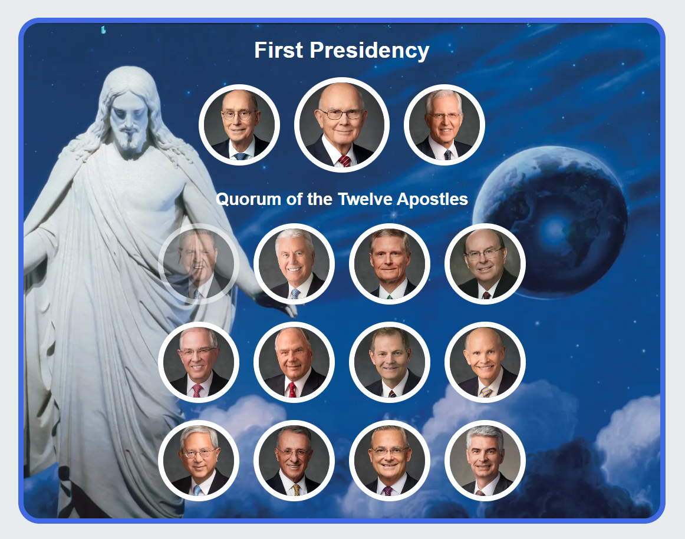
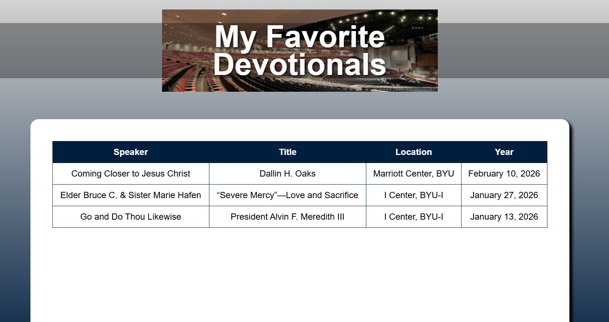
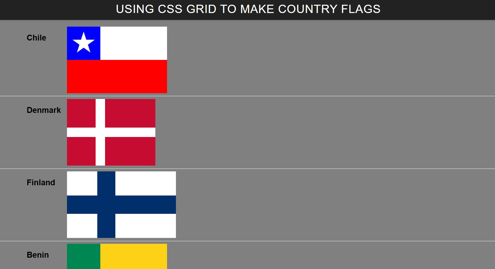
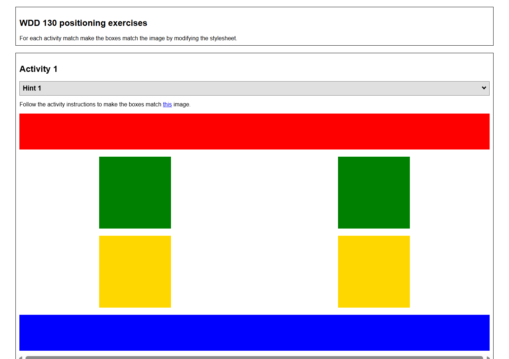

These are the in-class exercises completed throughout WDD 130. Each project focuses on a specific web development skill, from HTML structure to CSS layout techniques. These exercises were encouraged to be completed entirely in class with optional improvement outside class.

A card-style layout featuring president Dallin H. Oaks, the president and prophet of The Church of Jesus Christ of Latter-Day Saints.
View Project
An grid showcasing the apostles of The Church of Jesus Christ of Latter-Day Saints.
View Project
A themed holiday page with creative styling, built to explore what was possible with CSS, written with AI assistance.
View Project
A page for favorite devotionals, featuring a table and form, built to practice formatting table and form elements.
View Project
Flags created entirely with CSS Grid styling, built to practice grid layout and positioning of elements.
View Project
A series of exercises using CSS Grid positioning to match colored boxes to example layouts.
View Project